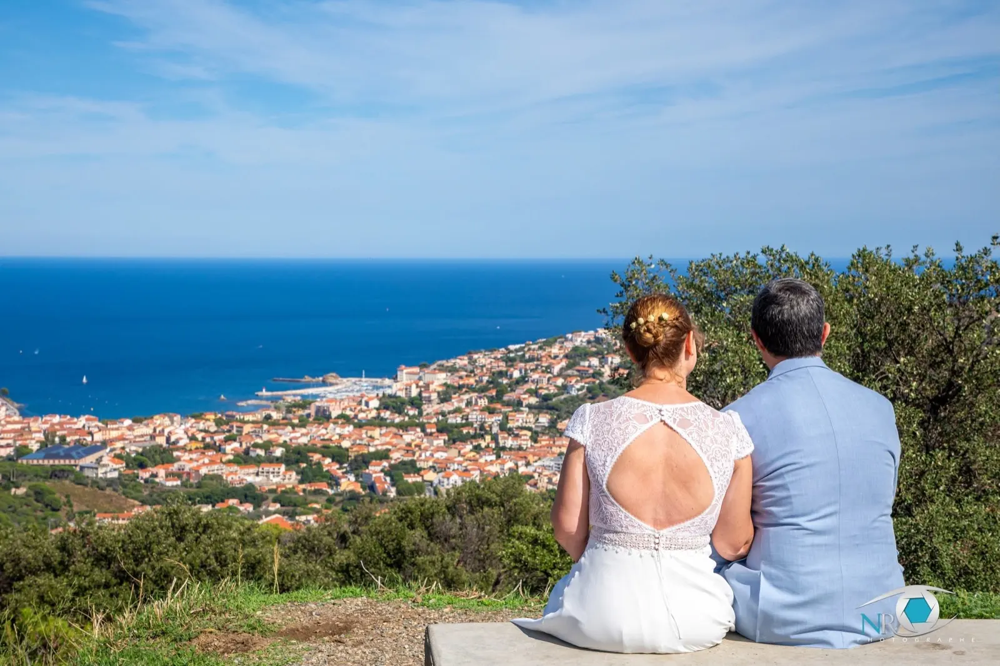
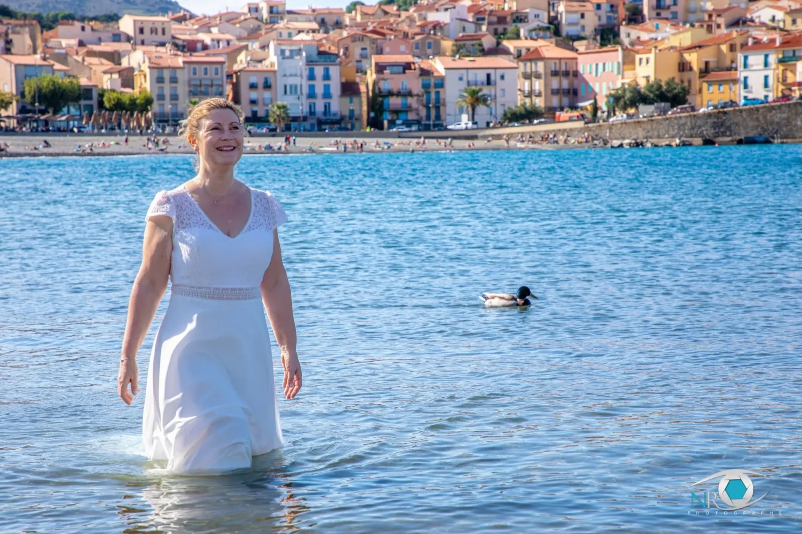
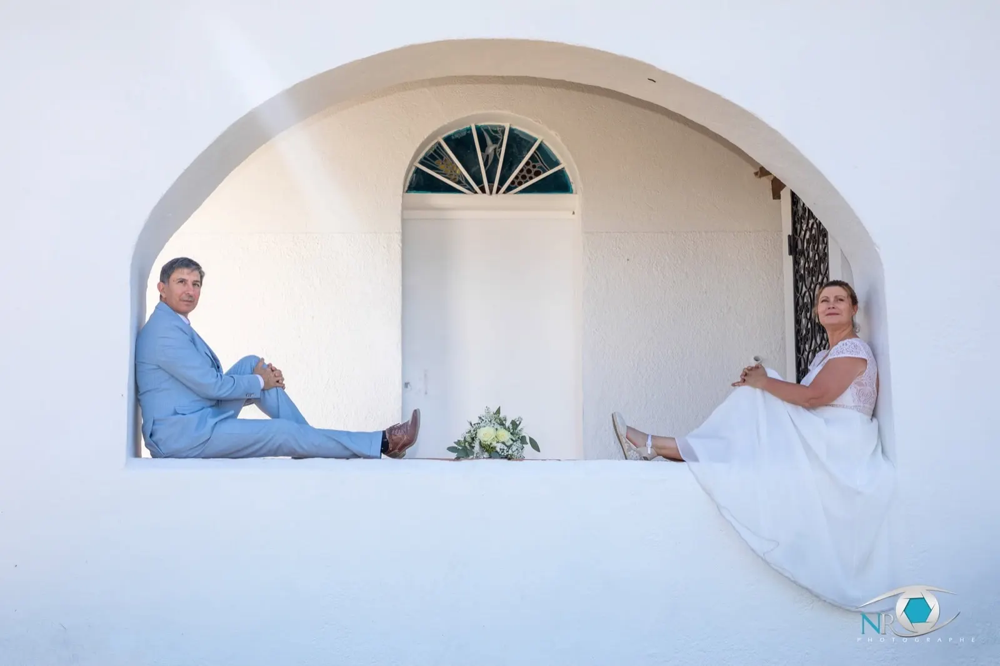
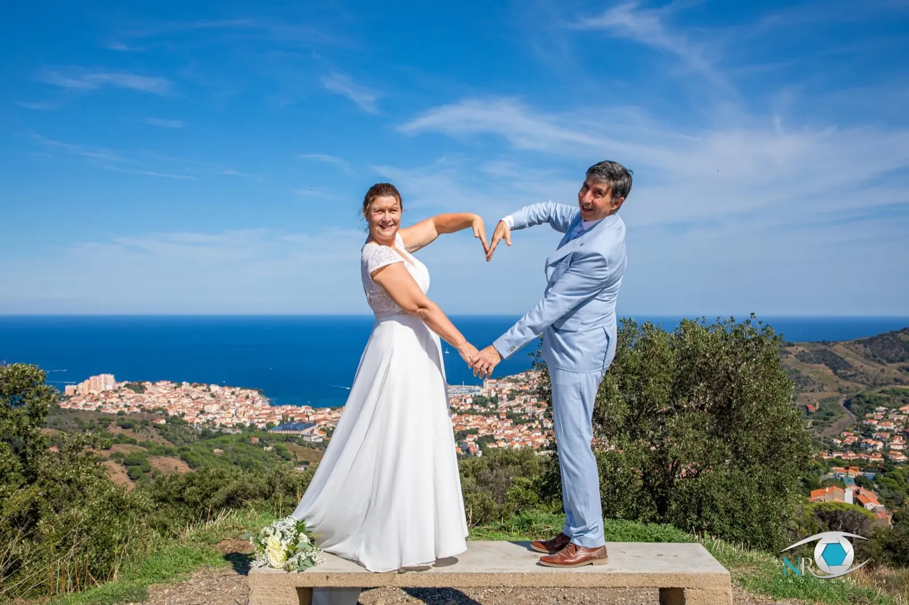
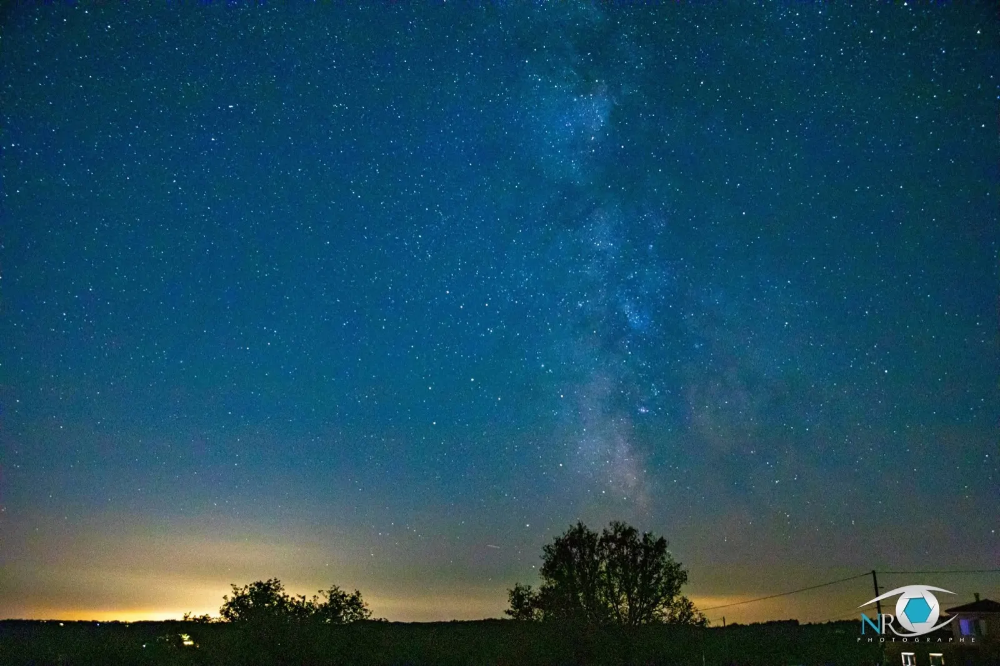
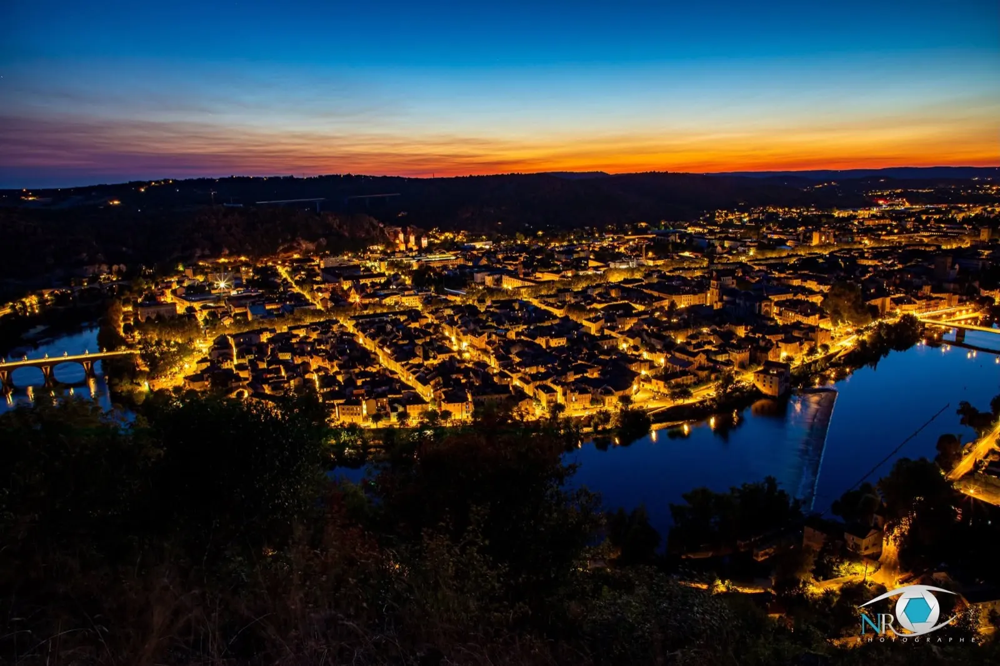
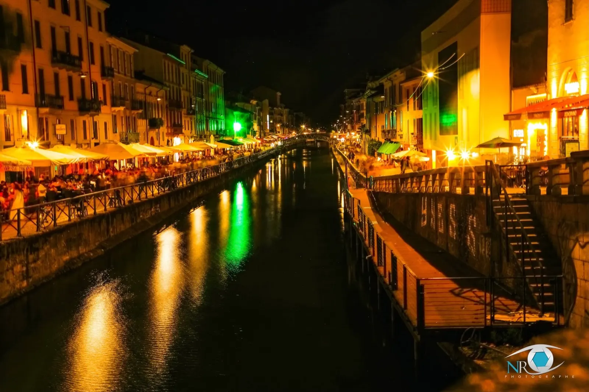
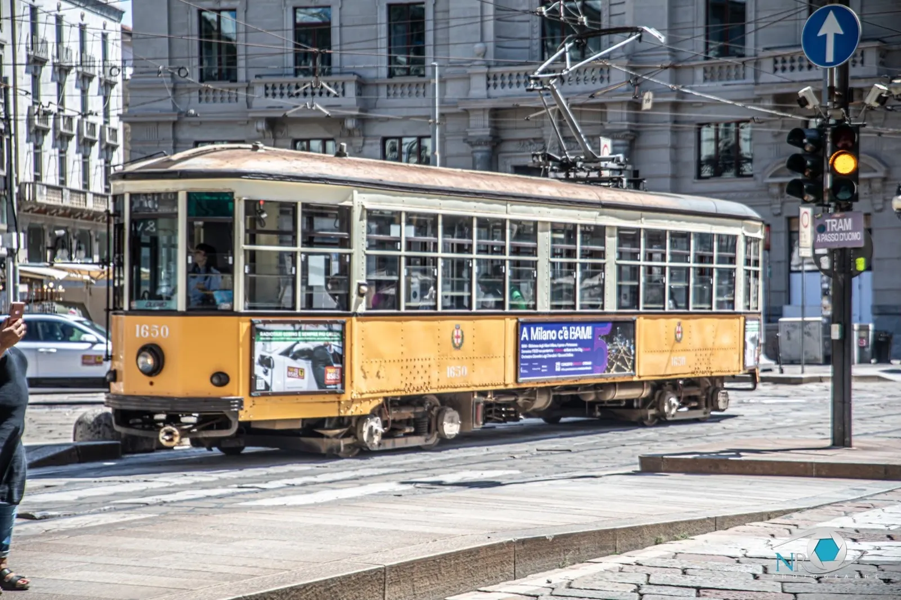

Photographe de mariage, à Perpignan.
Des mariés face à la Méditerranée, le pont Valentré à l'automne, la voie lactée au-dessus d'un arbre : ici, toute sorte de photos. N'hésitez pas à me contacter.

- MariagesPhotographe à Perpignan
- Tous les joursde 14 h à 19 h
- 5,0 sur Google1 avis
- Côte catalane, Lot, MilanMariages, paysages, nuits



Le mariage, entre la mer et les villages
Un mariage photographié sur la côte catalane : le couple, la mer, les villages colorés en fond, et la lumière du Sud.
- Au belvédèreUn cœur avec les mains, la ville et la mer derrière.
- Sous l'arche blancheUne composition graphique, les mariés de part et d'autre.
- Dans l'eauLa mariée en robe, debout dans la mer.
Quand la nuit tombe
La voie lactée au-dessus d'un arbre, une ville à l'heure bleue, un canal et ses terrasses éclairées : la photo ne s'arrête pas au coucher du soleil.



Du Lot à Milan
Le pont Valentré vu d'en haut en couleurs d'automne, Cahors, Saint-Cirq-Lapopie, puis les rues de Milan et leur vieux tramway jaune.

Parlons de vos photos
Un mariage, un projet, une question : un appel ou un e-mail suffit.
« Sur cette page, vous allez trouver toute sorte de photos. N'hésitez pas à me contacter. »NR Photographe
Tous les jours
14 h à 19 h
2 rue Théodore Géricault
66000 Perpignan